Start with the visitor question.
Services and guidance are organised around what people need to know, not internal terminology.
Concept project · Healthcare and wellness
A service-discovery concept designed to make wellness information feel approachable, understandable, and easy to act on.
Illustrative concept created to demonstrate our approach—not a verified client engagement.

The challenge
A service-discovery concept designed to make wellness information feel approachable, understandable, and easy to act on.
Visitors may be anxious, comparing options, or supporting someone else. Dense terminology and unclear next steps make an already sensitive task harder.
The brief in four moves
The response
Strategy, content, interface design, and technology connect around one clear experience.
Services and guidance are organised around what people need to know, not internal terminology.
Readable content, accessible interactions, and visible practical detail reduce uncertainty.
Appointment and inquiry routes explain what happens and avoid requesting unnecessary information.

Experience direction
Clear typography, predictable interactions, and responsive content help visitors find support across devices and reading contexts.
A focused narrative, useful proof points, and intentional calls to action help visitors understand where to go next.
Content and interactions adapt around real screen sizes, accessibility needs, and different reading contexts.
Artefacts and delivery
Illustrative deliverables and a sample sequence showing how this concept could become a real engagement.


Illustrative deliverables
Illustrative timeline · Scope dependent
Context, audience, content, constraints, and success measures.
Journeys, visual direction, prototypes, and review.
Responsive implementation, content, and quality checks.
Final review, documentation, launch, and next-step planning.
Proposed success measures
Evaluation criteria for a future engagement, not reported results from this concept.
Can visitors identify the service relevant to their situation?
Does the content remain understandable and accessible across needs?
Do appointment and inquiry journeys feel clear and respectful?